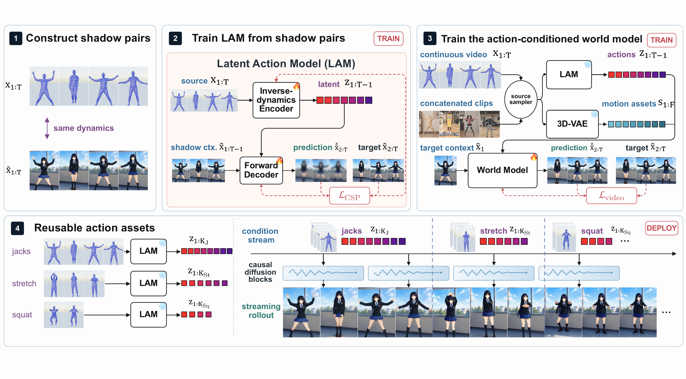

One latent interface. Every dynamics you see below.
ShadowDancer targets any-action, frame-level control: one interface that specifies how an action unfolds, frame by frame, for any dynamics family. The wall below is that claim in motion.
Every video is generated from a first frame and a stream of demonstrated actions — no labels, an action is just a clip, read once by a frozen encoder.
Every video is a shadow.
In Plato's cave, the prisoners mistake shadows for the things themselves. A video invites the same mistake: it shows its dynamics only through one particular appearance — one character, one scene, one camera — and it is tempting to take that single rendering for the dynamics itself.
That mistake is exactly what breaks control. The natural interface for an action is a demonstration — a clip specifies how the action unfolds, frame by frame, where commands and text only name what it is. But a demonstration is a shadow: models trained on single videos entangle the action with whatever happens to co-occur with it.
Our answer: observe the same dynamics twice. A shadow pair is two frame-synchronized renders of one dynamics with everything else resampled — what the pair preserves becomes the action (the weapon, the flames of a spell stay in by design); what it resamples is discarded. Invariant to what a pairing resamples, faithful to what it preserves.
Below, the Shadow Library itself — each tab is one pairing protocol. What a tab preserves is exactly what the latent will control.
From shadow pairs to a world model.

Construct shadow pairs
The Shadow Library replays one dynamics while everything else — character, scene, lighting, camera — is independently resampled. Animation suites, open-world games, and robot simulators all emit the same artifact: two frame-synchronized clips sharing one dynamics.
Cross-shadow prediction
A latent action model reads actions from one shadow and must re-enact them in the other. What the pairing resamples cannot cross the pair, so the latent keeps only what the pair shares — the dynamics, and any trait bound to it — provably the minimal sufficient representation.
Block-causal world model
A video diffusion backbone, conditioned on the action latents and on source motion assets, is converted to a block-causal generator that streams long rollouts from reusable, variable-length action assets.
The same action, in a world it has never seen.
Everything here comes from a single checkpoint: one latent interface, four dynamics families. The action is read from one video and replayed from the first frame of its shadow — the other shadow is the ground truth. Olaf-World (retrained on our data, same backbone) drags appearance along with the action and warps subjects; the shadow-trained latent re-enacts the dynamics faithfully.
Chained commands, judged head-to-head.
Discrete commands become lookups of stored assets and stream through the block-causal generator. With no ground truth for a chained command stream, rollouts are judged in blinded 2AFC against LingBot-World 2.0 (camera poses + text), Yume-1.5 (text + keystrokes), and Olaf-World's latent interface. Strips share the first frame and commands; a rollout that ends early holds its last frame. Text and keystrokes say what — the demonstration-derived latent specifies how, frame by frame.
Actions the model has never seen.
“And then he would see the sun itself, and not mere reflections of it — and he would know it to be the source of all that he and his fellows had been seeing.”
We mod an open-world game with assets the library has never seen — a new rifle, a new character, a greatsword — record each primitive once, and replay the extracted assets elsewhere. The encoder reads dynamics, not memorized categories: a newly demonstrated behavior simply joins the library.
Each cell is one action asset: a single primitive — move, look, fire or attack — demonstrated once, encoded once. Clips like these are the model's entire knowledge of the new weapon and character; no labels, no fine-tuning. The nine per mod are examples.
The assets are chained and replayed elsewhere. The environments are known to the model — the assets are not: gait, raise, recoil, and swing all survive.
BibTeX
@misc{cao2026shadow,
title={ShadowDancer: Teaching Video World Models Any Action by Learning Unified Dynamics Representations from a Video and Its Shadow},
author={Jin Cao and Zian Meng and Kaipeng Zhang},
year={2026},
eprint={2607.28362},
archivePrefix={arXiv},
primaryClass={cs.CV},
url={https://arxiv.org/abs/2607.28362},
}